철도신호기사 (2013-09-28 기출문제)
1과목: 전자공학
1. 검파효율이 90[%]인 직선검파회로에 반송파의 진쪽이 10[V]이고, AM 변조도가 50[%]인 피변조파를 인가하는 경우 출력에 나타나는 신호파의 진폭은 몇 [V]인가?
- 2.5[V]
- 4.5[V]
- 5.2[V]
- 9.5[V]
(정답률: 95%)

2. 다음 증폭기의 출력 V0는?
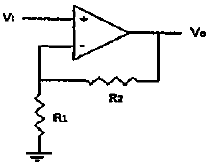
- V0=(1+R2/R1)V1
- V0=(R1+R2)V1
- V0=(1/(R1+R2))V1
- V0=(R1+R1/R2)V1
(정답률: 85%)
3. 개루프 전압이득이 40[dB]인 저주파 증폭기에서 비직선 일그러짐이 10[%]일 때 이것을 1[%]로 개선하기 위한 부궤환 증폭기의 전압궤환률 β는?
- 1/40
- 9/100
- 9/1000
- 11/1000
(정답률: 75%)
4. 그림과 같은 ECL 회로의 논리출력은? (단, Y, Y' 는 출력단자)
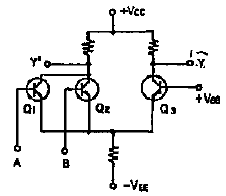
- Y : NAND, Y' : AND
- Y : AND, Y' : NAND
- Y : NOR, Y' : OR
- Y : OR, Y' : NOR
(정답률: 50%)
5. 다음 연산증폭기의 역할은? (단, R=R'이고 다이오드는 이상적이다.)
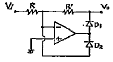
- 발진회로
- 클램프회로
- 전파정류기
- 반파정류기
(정답률: 50%)
6. 10진수 583을 BCD코드로 변환하면?
- 0101 1000 1100
- 1010 1000 0011
- 0101 1010 0011
- 0101 1000 0011
(정답률: 74%)
7. 다음 중 정류회로에서 다이오드를 여러 개 병렬로 접속시킬 경우의 특성은?
- 과전압으로부터 보호할 수 있다.
- 과전류로부터 보호할 수 있다.
- 정류기의 역방향 전류가 감소한다.
- 부하출력에서 역동률을 감소시킬 수 있다.
(정답률: 95%)
8. 어떤 차동증폭기의 차동전압이득은 1500이고 동위상 이득은 0.1일 때 동위상 신호제거비(CMRR)을 구하고 이를 데시별로 나타낸 것으로 맞는 것은?
- 30000, 167[dB]
- 30000, 83.5[dB]
- 15000, 167[dB]
- 15000, 83.5[dB]
(정답률: 94%)
9. 변조도가 “1”이라는 의미는?
- 1[%] 변조
- 무변조
- 과변조
- 100[%] 변조
(정답률: 94%)
10. PM의 최대 주파수 변이는?
- 변조 신호의 주파수에 비례한다.
- 변조 신호의 주파수에 반비례한다.
- 반송파 주파수에 비례한다.
- 반송파 주파수에 반비례한다.
(정답률: 48%)
11. 진성반도체에서 전자와 정공의 농도가 같다고 할 때 전도대의 준위가 0.2[eV]이고, 가전자대의 준위기 0.7[eV]일 때 페르미 준위[eV]는?
- 0.14
- 0.45
- 0.5
- 0.9
(정답률: 65%)
12. C급 전력 증폭기에 대한 설명으로 거리가 먼 것은?
- 입력신호의 전주기 동안에 컬렉터 전류가 흐르기 때문에 소비전력이 매우 크다.
- B급 증폭기 보다 효율이 높다.
- C급 증폭기의 컬렉터에 저항부하를 연결하면 펄스 형태에 가까운 출력이 나타난다.
- 컬렉터에 연결한 저항 대신 LC 병렬공진 회로를 사용하면 공진주파수의 전압 파형을 정현파로 만들 수 있다.
(정답률: 57%)
13. 정전압 전원 장치에서 무부하시 단자 전압이 15[V], 전부하시 단자 전압이 10[V]라면 전압 변동률[%]은?
- 10
- 30
- 50
- 70
(정답률: 94%)
14. 변조신호 주파수가 2[MHz]인 FM파의 점유주파수 대역폭은 얼마인가? (단, 최대 주파수편이는 10[MHz]임)
- 38[MHz]
- 36[MHz]
- 24[MHz]
- 20[MHz]
(정답률: 94%)
15. 그림과 같은 회로가 발진하기 위한 조건이 아닌 것은?
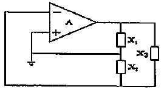
- 루프 이득이 1 이어야 한다.
- X1+X2+X3=0
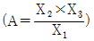
- X1과 X2는 같은 부호를 가져야 하고, X3는 이와 반대 부호를 가져야 한다.
(정답률: 80%)
16. AM 변조에서 반송파의 주파수가 600[kHz], 변조파의 주파수가 7[kHz]라고 할 때 주파수 대역폭은?
- 7[kHz]
- 14[kHz]
- 70[kHz]
- 140[kHz]
(정답률: 85%)
17. 그림과 같은 디코더는 BCD 입력이 1001(ABCD)인 대안출력이 1을 나타낸다고 할 경우 다음 중 출력 Y를 불대수식으로 표현하면?
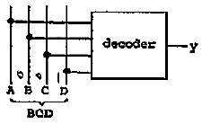
- AD
- AB
- AC
- BCD
(정답률: 87%)
18. 주파수 변조에서 변조지수가 5이고 신호의 최고주파수가 12[kHz]일 때 그 소요대역폭[kHz]은?
- 60
- 120
- 180
- 240
(정답률: 67%)
19. 첫째 단의 잡음지수 F1=10, 이득 G1=20이며, 다음 단의 잡음지수 F2=21, 이득 G2=50 일 때 2단 증폭기의 종합잡음 지수는?
- 11
- 110
- 21
- 210
(정답률: 75%)
20. 다음 중 정현파를 구형파로 만드는데 사용하는 회로는?
- 적분기
- 미분기
- 슈미트 트리거회로
- 멀티바이브레이터회로
(정답률: 93%)
2과목: 회로이론 및 제어공학
21. 다음과 같은 함수 f(t)를 라플라스 변환하면?
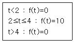
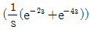
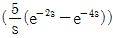
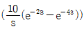
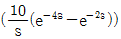
(정답률: 53%)
22. 분포정수 회로가 무왜선로로 되는 조건은? (단, 선로의 단위 길이당 저항은 R, 인덕턴스는 L, 정진용량은 C, 누설 콘덕턴스는 G이다.)
- RL=CG
- RC=LG
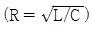
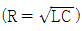
(정답률: 82%)
23. 대칭 3상 전압을 a상을 기준으로 했을 때 영상분 V0, 정상분 V1, 역상분 V2의 합은?
- Va
- Va+1
- 0
- 1
(정답률: 36%)
24. 다음의 회로에서 t=0일 때 스위치 K를 열면서 정전류원을 연결하였다.
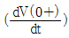
의 값은? (단, C의 초기전압은 0으로 가정한다.)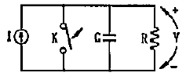
- 0
- I/C
- IC/C
- C/I
(정답률: 46%)
25. 2차 시스템의 감쇠율(damping rario) δ가 δ＜1 이면 어떤 경우인가?
- 비감쇠
- 과감쇠
- 발산
- 부족감쇠
(정답률: 77%)
26. 그림과 같은 회로에서 a, b 에 나타나는 전압은?
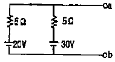
- 20[V]
- 23[V]
- 25[V]
- 26[V]
(정답률: 79%)
27. 그림과 같은 파형의 파고율은?
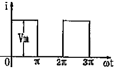
- 1
- √2/√3
- √2
- √3
(정답률: 42%)
28. 2단자 회로망에 그림과 같은 단위계단 전압을 인가하였을 때 흐르는 전류가 i(t)=2e-t+3e-2t[A]이었다. 이때 이 2단지 회로망의 구성은 어떻게 되겠는가?
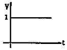
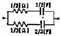
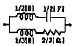
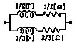
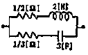
(정답률: 22%)
29. 단상 유도부하 R+jwL[Ω]에 정전용량 C[F]을 병렬로 접촉하에 회로의 역률을 1로 만들었다. 이 경우의 C의 값은?
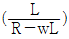
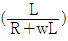
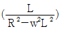
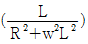
(정답률: 37%)
30. 대칭 5상 기전력의 선간전압과 상간전압의 위상차는 얼마인가?
- 27°
- 36°
- 54°
- 72°
(정답률: 58%)
31. Nyqulst 선도에서 이득여유가 40[dB]이고 위상여유가 50°이다. 이 시스템의 안정 여부는?
- 안정 상태이다.
- 불안정 상태이다.
- 임계 상태이다.
- 판정 불능 상태이다.
(정답률: 65%)
32. 안정된 제어계의 특성근이 2개의 공액 복소근을 가질 때 이 근들이 허수로 가까이에 있는 경우 허수측에서 멀리 떨어져 있는 안정된 근에 비해 과도응답 영향은 어떻게 되는가?
- 과도응답이 같다.
- 과도응답이 천천히 사라진다.
- 과도응답이 빨리 사라진다.
- 과도응답에는 영향을 미치지 않는다.
(정답률: 80%)
33. 다음 블록선도를 옳게 등가변환 한 것은?
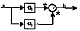
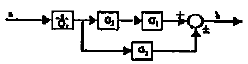
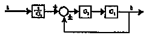
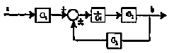
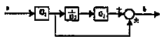
(정답률: 47%)
34. 그림과 같은 블록선도에서 전달함수 C(s)/R(s)를 구하면?
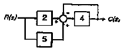
- 1/8
- 5/28
- 28/5
- 8
(정답률: 70%)
35. 진상보상기의 특성에 대한 설명으로 잘못된 것은?
- 제어계 응답의 속응성을 좋게 한다.
- 이득을 향상시켜 정상 오차를 개선한다.
- 공진 주파수의 특성을 그대로 두면서 저주파 영역의 이득을 높인다.
- 저주파수에서는 이득이 낮았다가 고주파에서는 이득이 커진다.
(정답률: 16%)
36. 상태방정식 x=A·x+B·u, y=C·z에서 특성방정식을 구하면? (단,
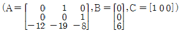
이다.)- s3+8s2+19s+12=0
- s3+12s2+19s+8=0
- s3+12s2+19s+8=0
- s3+8s2+19s+12=6
(정답률: 42%)
37. s2+5s+25=0 의 특성 방정식을 갖는 시스템에서 단위계단 함수 입력시 최대 오버슈트(maximum over shoot)가 발생하는 시간은 약 몇 [sec]인가?
- 0.726
- 1.451
- 2.902
- 0.363
(정답률: 39%)
38. 그림과 같은 회로의 출력 Z는 어떻게 표현되는가?
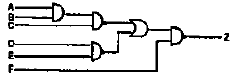
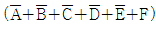
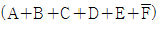
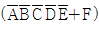
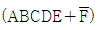
(정답률: 74%)
39. 계의 특성상 감쇠계수가 크면 위상여유가 크고 감쇠성이 강하여 ( A )는(은) 좋으나 ( B )는(은) 나쁘다. 괄호안의 A, B를 올바르게 묶은 것은?
- 이득여유, 안정도
- 오프셋, 안정도
- 응답성, 이득여유
- 안정도, 응답성
(정답률: 42%)
40. 어떤 시스템의 전달함수 G(s)가
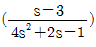
로 표시될 때 이 시스템에 입력 x(t)를 가했을 때 출력 y(t)를 구하는 미분 방정식은? (단, 모든 초기조건은 0이다.)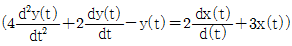
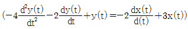
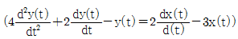
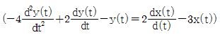
(정답률: 72%)
3과목: 신호기기
41. 60[Hz], 6극, 3상 유도전동기의 슬립이 4[%]일 때 회전수는 몇 [rpm]인가?
- 1152[rpm]
- 1178[rpm]
- 1200[rpm]
- 1218[rpm]
(정답률: 67%)
42. 22[kW], 220[V] 직류발전기의 전부하 전류[A]는?
- 100[A]
- 120[A]
- 140[A]
- 160[A]
(정답률: 87%)
43. 입력 100[V]의 단상 교류를 SCR 4개를 사용하여 브리지제어 정류하려 한다. 이 때 사용할 1개 SCR의 최대 역전압(내압)은 약 몇 [V]이상이어야 하는가?
- 25[V]
- 100[V]
- 141[V]
- 200[V]
(정답률: 48%)
44. 3상 전원으로부터 2상 전원을 얻고자 할 때 사용되는 변압기의 결선방식이 아닌 것은?
- 메이어(Mayer) 결선
- 포크(fork) 결선
- 스콧(scott) 결선
- 우드브리지(wood bridge) 결선
(정답률: 90%)
45. 철도 건널목경보장치의 건널목 제어자 2420(201)형에 대한 설명 중 옳은 것은?
- 제어구간의 길이는 50[m] 이상이다.
- 발진주파수는 20[kHz]±2[kHz]이내이다.
- 접속선 취부 간격은 5[m]이다.
- 개전로식이다.
(정답률: 82%)
46. 계전기 접점 NR4/N4R4를 옳게 설명한 것은?
- 정위접점 4조, 반위접점 4조, 무위접점 4조
- 정반위접점 4조, 정위접점 4조, 반위접점 4조
- 반위접점 4조, 정위접점 4조, 무위접점 4조
- 여자접점 4조, 무여자접점 4조, 반위접점 4조
(정답률: 72%)
47. 권수비 60인 단성변압기의 전부하 2차 전압 200[V], 전압변동률 3[%]일 때 1차 단자전압 [V]은?
- 12000[V]
- 12180[V]
- 12360[V]
- 12720[V]
(정답률: 63%)
48. 전기 선로전환기의 마찰 클러치(연축기)의 역할로서 가장 옳은 것은?
- 마찰연축기와 맞물린 기어마모방지
- 전동기 보호
- 회전수 조절
- 습기 방지
(정답률: 79%)
49. 직류 분권전동기의 기동시 계자저항기의 저항값은 어떻게 하여야 하는가?
- 떼어 놓는다.
- 최대로 놓는다.
- 중위로 놓는다.
- 0으로 놓는다.
(정답률: 65%)
50. 4극, 60[Hz], 22[kW]인 3상 유도전동기가 있다. 전부하 슬립 4[%]로 운전할 때 토크[kg·m]는 약 얼마인가?
- 9.65[kg·m]
- 10.72[kg·m]
- 11.86[kg·m]
- 12.41[kg·m]
(정답률: 59%)
51. 전동 차단기의 계전기 및 전자석에 저항을 설치하는 목적은?
- 서지(surge)의 방지
- 전압강하로 정격전압 유지
- 온도특성의 보상
- 정격토크 유지
(정답률: 50%)
52. 3상 유도전동기의 슬립-토크 특성곡선을 나타낸 것은?
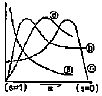
- ⓐ
- ⓑ
- ⓒ
- ⓓ
(정답률: 80%)
53. 장대형 전동 차단기의 기동전류는 몇 [A]이하가 되도록 하여야하는가?
- 40[A]
- 50[A]
- 60[A]
- 70[A]
(정답률: 59%)
54. 삽입형 계전기에서 1AUR 이 의미하는 것은?
- 1A 신호기의 시소계전기
- 1A 신호기의 조사계전기
- 1A 신호기의 신호제어계전기
- 1A 신호기의 소등검지계전기
(정답률: 83%)
55. 교류전기 선로전환기의 전동기 회전방향을 제어하는 기기는?
- 전철정자
- 제어계전기
- 회로제어기
- 계자권선접속기
(정답률: 94%)
56. NS형 전기선로전환기의 전환시간으로 옳은 것은?
- 2초 이하
- 4초 이하
- 6초 이하
- 10초 이하
(정답률: 67%)
57. 3상 유도전동기의 특성 중 비례추이를 할 수 없는 것은?
- 효율
- 역률
- 1차 전류
- 토크
(정답률: 50%)
58. 직류기에서 전기자반작용으로 나타나는 영향이다. 다음 중 틀린 것은?
- 전기자 중성축이 이동한다.
- 정류자 편간의 불꽃 섬략이 발생한다.
- 단자전압의 저하는 전동기에만 나타난다.
- 회전속도의 상승은 전동기에만 나타난다.
(정답률: 72%)
59. 직류전동기의 회전수를 1/2로 하려면 계자자속을 어떻게 하면 되는가?
- 1/4로 줄인다.
- 1/2로 줄인다.
- 4배로 증가시킨다.
- 2배로 증가시킨다.
(정답률: 86%)
60. 건널목 경보기의 경보종 타종수의 범위는 기당 어떻게 되는가?
- 매분 50~80회
- 매분 60~90회
- 매분 70~100회
- 매분 80~120회
(정답률: 79%)
4과목: 신호공학
61. 철도 건널목 경보시간이 30[sec], 열차최고속도가 108[km/h]이고, 저속도 열차의속도가 36[km/h]일 때 건널목 경보제어 구간의 길이[m]는?
- 408
- 690
- 900
- 1060
(정답률: 72%)
62. 점제어식 지상장치(ATS)에 대한 설명으로 맞는 것은?
- 궤간중심으로부터 우측으로 300[mm]±10[mm] 이내 설치
- 지상자의 높이는 레일 면에서 20~50[mm]에 설치
- 설치거리는 신호기 바깥쪽으로부터 열차 제동거리의 1.2배 범위
- 공진주파수는 136~145[kHz]
(정답률: 69%)
63. 경부고속철도(KTX)에 사용하는 UM71C-TVM430 궤도회로를 구성한 기준거리는 얼마인가?
- 1000m
- 1500m
- 2000m
- 2500m
(정답률: 93%)
64. 제어자식 건널목 종점에 사용하는 궤도회로로 차축을 통하여 궤도계전기를 제어하고, 경제성이 높은 궤도회로는?
- 폐전로식 궤도회로
- 개전로식 궤도회로
- 2위식 궤도회로
- 3위식 궤도회로
(정답률: 80%)
65. 신호용 정류기의 정류회로 무부하 전압이 260V 이고 전부하 전압이 250V 일 때 전압변동률[%]은?
- 2
- 4
- 6
- 8
(정답률: 91%)
66. 경부고속철도 열차제어설비의 CAMS(컴퓨터지원유지보수시스템)의 기능으로 거리가 먼 것은?
- FEPOL을 통해 전해지는 모든 제어의 감시
- 각 연동장치의 상태변화 검지 및 기록유지
- TVM 430에 의해 생성된 속도코드 감시 및 기록
- FEPOL과 SSI의 진단모듈에 의해 검지된 고장정보의 수신 및 출력
(정답률: 56%)
67. 경부고속철도(KTX) 역 조작판(LCP) 신호화면 현시 내용이 아닌 것은?
- 신호마커
- 보호스위치
- 방향연동
- 제어구역 레일검지온도
(정답률: 92%)
68. 철도신호 중 수신호등의 현시상태를 확인할 수 있도록 확보하여야 하는 거리는?
- 200[m] 이상
- 300[m] 이상
- 400[m] 이상
- 500[m] 이상
(정답률: 73%)
69. 어느 구간의 궤도회로에 4V, 1A 의 전원을 공급하였을 때 수전 전압의 측정치가3.95V 이면 이 궤도회로의 저항[Ω]은?
- 0.01
- 0.03
- 0.⑤
- 0.08
(정답률: 79%)
70. 철도 신호보안장치의 고장률 산출식은?
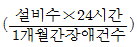
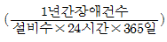
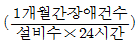
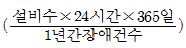
(정답률: 93%)
71. 삽입형 계전 연동장치에서 신호기 외방 일정구간에 열차가 존재하고 조작자가 임의로 신호기를 반위에서 정위로 복귀시킨 후 일정시간이 지나기 전에 다른 진로를 취급하였을 때 선로전환기 전환이 일어나지 않도록 계전기의 낙하상태를 유지하는 회로는?
- 진로쇄정회로
- 진로선별회로
- 진로조사회로
- 신호현시회로
(정답률: 95%)
72. 철도신호보안 설비 중 열차의 안전운행을 방해하는 가장 큰 원인을 가지고 있는 장치로 제어계전기와 회로제어기를 포함하고 있는 설비는?
- 신호기 장치
- 선로전환기 장치
- 궤도회로 장치
- 연동장치
(정답률: 69%)
73. 정류기로부터 축전지와 부하를 병렬로 접속하여 그 회로전압을 축전지의 전압보다 약간 높게 유지시켜 사용하는 충전방식은?
- 부동충전
- 균등충전
- 초충전
- 세류충전
(정답률: 100%)
74. 경부고속철도에 설치된 터널경보장치에 대한 내용으로 거리가 먼 것은?
- 터널 양쪽 입구에서 경보장치 작동스위치를 ON-OFF할 수 있다.
- 경보시간은 건널목 최소경보시간과 동일한 20초이다.
- 경보기의 설치간격은 약 500m 정도로 한다.
- 상, 하선 양방향 제어가 가능하다.
(정답률: 67%)
75. [그림]과 같은 도식기호에 대한 설명으로 옳은 것은?
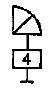
- 진로표시기가 없는 입환 신호기
- 4번 선로의 입환표지
- 4번으로 상시 개통되는 입환신호기
- 4진로가 있는 진로표시기가 붙은 입환표지
(정답률: 80%)
76. 3위식 신호기의 5현시 방법으로 옳은 것은?
- R, RY, Y, YG, G
- R, YY, Y, YG, G
- R, YY, Y, RG, G
- R, WY, Y, WG, G
(정답률: 92%)
77. 우리나라 고속철도의 UM71C무절연 궤도회로의 선로에 사용되는 보상용 콘덴서에 대한 설명으로 맞는 것은?
- 손실이 적고 임피던스가 높으며 동조회로 특성계수를 개선하는데 사용되며 전차선 전류를 15[A]로 제한 시킨다.
- 공심유도자에 연결시켜 주파수를 분할하기 위하여 사용한다.
- 레일 인덕턴스효과를 제한시키고 신호감쇠 현상을 줄이기 위하여 사용한다.
- 궤도회로 고조파성분을 제한하고 전차선 귀선전류를 조정하기 위하여 사용한다.
(정답률: 74%)
78. 열차집중제어장치의 주요기능으로 거리가 먼 것은?
- 열차운행계획관리
- 수송수요예측관리
- 열차의 진로 자동제어
- 신호설비의 감시제어
(정답률: 93%)
79. 단선구간의 선로용량에 관하여 표현한 식으로 옳은 것은? (단, N은 역 사이의 선로용량, T는 역 사이의 평균열차운행시간[분], C는 폐색취급시간[분], f는 선로이용률이다.)
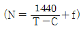
(정답률: 100%)
80. 다음 중 분기기의 크로싱각과 분기기 번호 및 열차 제한속도와의 관계에 대한 설명으로 맞는 것은?
- 분기기 번호가 작을수록 크로싱각이 크게 되어 열차의 제한속도가 높아짐.
- 분기기 번호가 클수록 크로싱각이 작게 되어 열차의 제한속도가 높아짐.
- 분기기 번호가 작을수록 크로싱각이 작게 되어 열차의 제한속도가 높아짐.
- 분기기 번호가 클수록 크로싱각이 크게 되어 열차의 제한속도가 낮아짐.
(정답률: 79%)